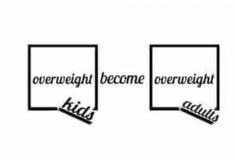
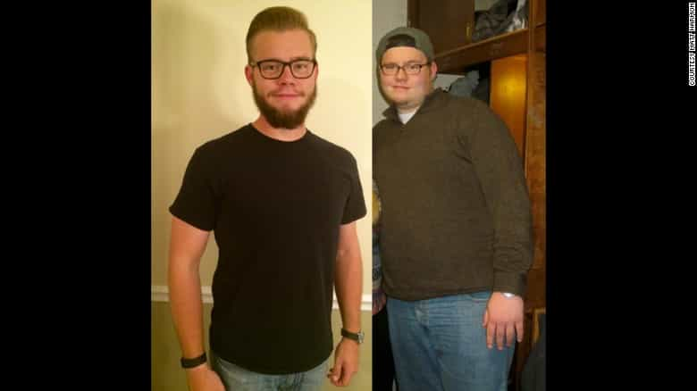

Quintus can be found at qcurtius.com. He is the author of the books On Duties, Thirty Seven, Sallust: The Conspiracy Of Catiline And The War Of Jugurtha, and other books. His work has been reviewed at Taki's Magazine. He can be followed on Twitter


We read so many media stories about how we have to “accept” or “deal with” mediocrity, or even things worse than mediocrity. It has all become so routine as to pass almost without comment. But every now and then an inspiring story will get the attention that it deserves. I recently came across story of a young guy who literally fought his way out of depression and obesity. I thought I’d share the story here, which I learned from reading his long blog article on how he changed his life.
You don’t need to have experienced obesity to admire this guy. I’ve never had a weight problem, but I do know how difficult it can be for someone to change his way of thinking and his lifestyle. It takes a supreme, sustained effort for many years, and even then it becomes a life-long responsibility. It’s easy to see why so few people can do it. But we should all strive to crush our personal demons to achieve a better life. That’s the real lesson here.
Matt Harmon grew up loving food. He readily admits it. But he doesn’t take refuge in any excuses. He freely admits that it was his personal choice to be fat:
The way I packed on pounds was my fault, and mine alone. I can’t blame my parents, there’s no fingers to point at “society” or modern technology. I stayed fat because I wanted to. I didn’t know how much I hated it, or the way the negativity of my consistent weight gain consumed me, until much later in life.
Even so, for a long time he remained oblivious to calls to change. His family pestered him to be more active and try to lose weight. But Matt just didn’t care. He couldn’t see the logic in it. At the end of the day, when all was said and done, the benefit he got from being fat outweighed any negatives he experienced from his condition. And so nothing changed.

College brought with it a host of new opportunities to indulge in food. He tried to visit the gym, and did, but his workouts just didn’t take. He explains why here:
So I’d piddle around at the gym without any real direction for two or three weeks at a time. But I’d quickly become disenfranchised when I would lose just a couple pounds in a month and didn’t see a lick of difference in the mirror. I was also insecure about being the fat guy in the gym, like all the in-shape people were looking in my direction thinking “what the hell are you doing here?” That reminds me, don’t be the person who gym-shames. It’s fun to laugh at those goofy commercials, and yes, crowded gyms are not ideal for regular visitors. But that unspoken feeling of insecurity and shame kept me out of gyms for years.
At one point, his weight exceeded 300 pounds. He was also binge drinking, and he was out of control. And somehow, at some point, he realized that something had to change. The first real change began with getting rid of soda. He believes soda, more than anything else, was the demon that kept him addicted to bad food habits. After that, he made other healthy dietary changes. And soon, these little steps began to look like big steps.
Take one step toward your goal, and it takes two steps towards you, to modify an old religious maxim.
But then things took a nosedive again when he graduated from college and began his first job. He was dealing with personal issues—family issues—as well, and just getting out of bed in the morning had become a real task.
The real, final decision to change came around December 2013. Two key factors played into this decision: first, he had begun writing a personal blog that focused on football; second, he just got sick of being overweight. It was that simple. As he describes it:
Simply put, I was just tired of being overweight. I had enough! For years, I hated looking in the mirror and facing the image that stared back at me. The chubby face, a stomach that hung over my belt and covered in shirts that hugged in unflattering spots; I wanted it all gone. Sure, I had those thoughts and desires for years. But this time, I was taking control. I was going to fight for my health. From that moment on, my life changed forever and I never looked back.
Other fortuitous circumstances played a role here as well. He chose to take a job that gave him the time and ability to work out seriously. He also “radically” transformed his eating habits. Realizing that the baby steps he had been taking were not working, he launched into some bold moves. And it all came together.
He even got a new job offer at NFL Media in Los Angeles. When good things happen in one area of your life, the positivity tends to carry over into other areas.

What can we learn from this story? Here are the four major points:
1. Your interests and hobbies can save you. Cultivate them, and never abandon them unless they are self-destructive. If you like to write, write about them. Do what you know best, and you’ll do it better than anyone else.
2. Do not give in to negativity. Do not coddle yourself. Do not listen to the media’s attempts to brainwash you into becoming a mediocre loser. There are millions of people out there who have the same problem that Matt Harmon did. And most of them are making excuses for themselves. Don’t be one of those people.
Nobody cares about your negativity, your excuses, and your problems. Being negative is a character trait of chickenshits and wimps. You have to take charge of your own life. If you don’t, your demons will control your life for you. And they’ll take you right over the edge of the abyss.
3. Sometimes you need to change your city and environment dramatically. Bold changes are often better than incremental changes. You need something to “shock” you into new patterns and new directions.
4. Only you can make the decision to change. At some point, you will just reach a crisis point where you either fight or collapse. What are you going to do? Are you going to drop your pack on the side of the road and be a whiner, or are you going to keep moving forward? The decision is yours.
What makes Harmon’s achievement so impressive (at least to me) is that it comes in the face of unrelenting obesity propaganda from the mainstream media. Rather than try to help people, the media instead caters to their basest instincts, with the sole purpose of making money from their misery.
Sometimes I think we need to start a “Man of the Week” or “Man of the Month” featurette. If so, my vote this week goes to Matt Harmon, for having the balls and the discipline to break out of his inner prison.
Well done, Matt.
Read More: 5 Things I Will Teach My Future Son